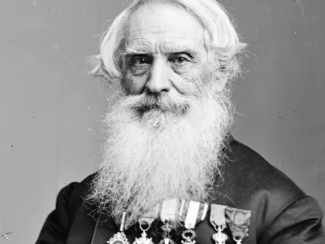
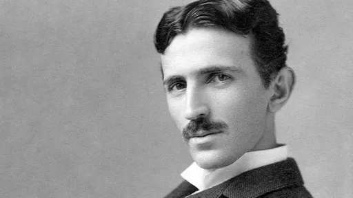
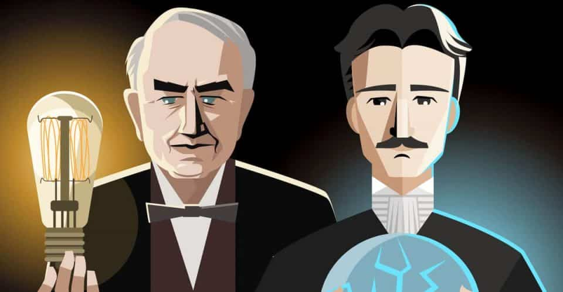

Samuel Morse
Samuel Finley Breese Morse foi um inventor, físico e pintor de retratos e cenas históricas estadunidense. Tornou-se mundialmente célebre pela suas invenções: o código Morse e o telégrafo com fios, em 1844.
Nikola Tesla
Nikola Tesla foi um inventor, engenheiro eletrotécnico e engenheiro mecânico sérvio, mais conhecido por suas contribuições ao projeto do moderno sistema de fornecimento de eletricidade em corrente alternada.
Steve Jobs

Steven Paul Jobs foi um inventor, empresário e magnata americano no setor da informática. Notabilizou-se como co-fundador, presidente e diretor executivo da Apple Inc. e por revolucionar seis indústrias: computadores pessoais, filmes de animação, música, telefones, tablets e publicações digitais.
Inventores famosos que mudaram o mundo
Para que uma invenção deixe uma marca significativa na história, seu impacto precisa ser significativo. Compreensivelmente, isso não acontece com muita frequência. Todavia, existiram e existem muitos inventores famosos que revolucionaram o mundo com suas invenções.
